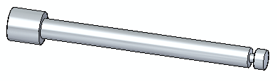
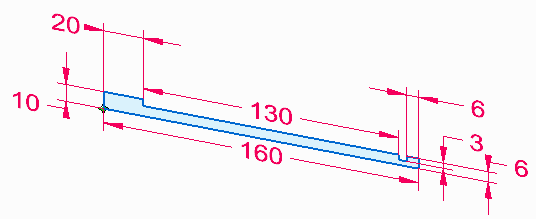
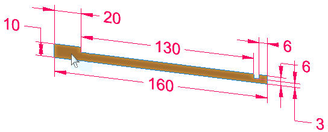
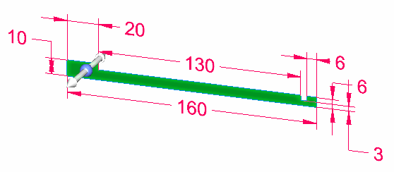
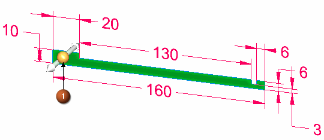
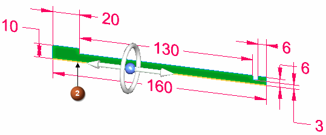
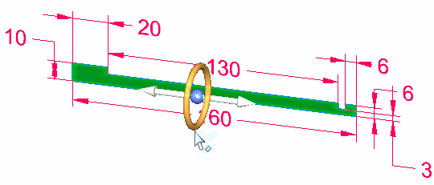
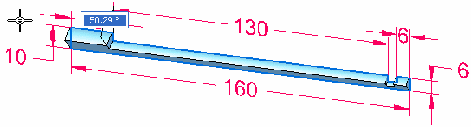
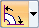
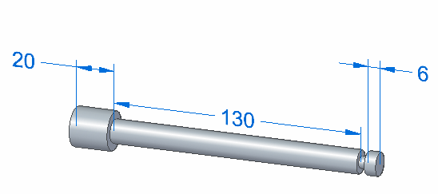

Activity: Create a base revolved synchronous feature

Overview
This activity demonstrates the process of creating a part model using the Revolve command.
Objectives
Create a vise screw to become familiar with the Revolve command for construction of base features.
In this activity you will:
Create a region consisting of sketch elements.
Use the Select tool to invoke the Revolve command.
If you are using Internet Explorer and a video is not displaying properly, click the Tools tab (or gear icon)→Compatibility View settings, and then clear the selection of Display intranet sites in Compatibility View.
Create a new ISO Metric part file.
Draw and dimension the following sketch.

Select the region.


Click the extrude handle origin (1) and drag it to the edge (2).


The extrude handle changes to a revolve handle. Edge (2) is the axis of revolution.
Click the torus to start the rotation extent definition.

The geometry dynamically attaches to the cursor.

On command bar, select the Live Sections option to turn it off.
Turn on the 360° extent option

.
Save and close the file.
In this activity you learned how to create a revolved base feature. A sketch was created and dimensioned. A region was revolved and the sketch dimensions migrated to the base feature. The extrude handle changes to a revolve handle when you drag it to an edge.
Click the Close button in the upper–right corner of this activity window.